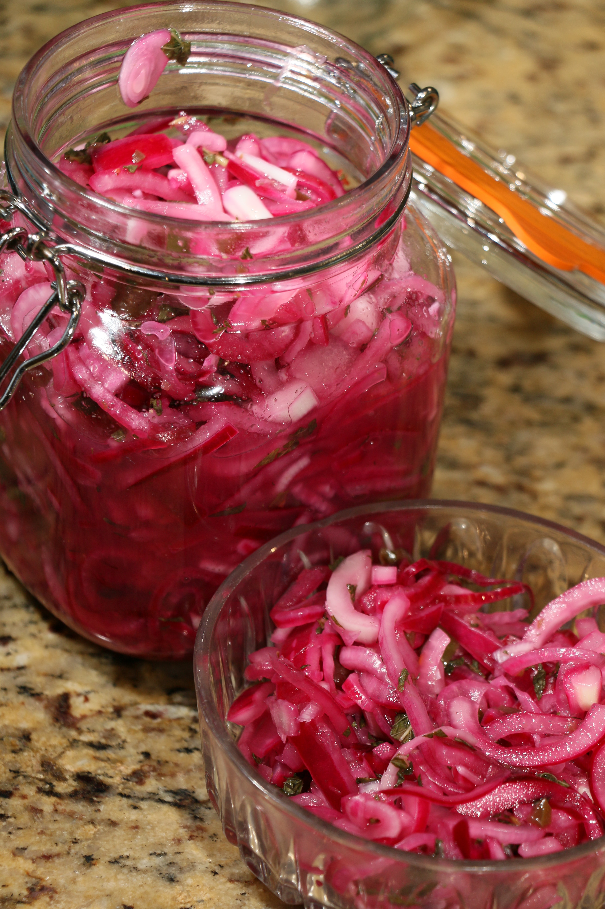

Onion Relish

Description
The tanginess on the side, to give your dish that little extra
Ingredients
- Onions
- Vinegar
- Sugar
- Bay leaves
- Juniper berries
Steps
- Add water to a pot
- Add all ingredients except the onions and bring to a boil
- Cut onions an put them into desired containers
- Pour liquid over and seal tightly
Back to main page